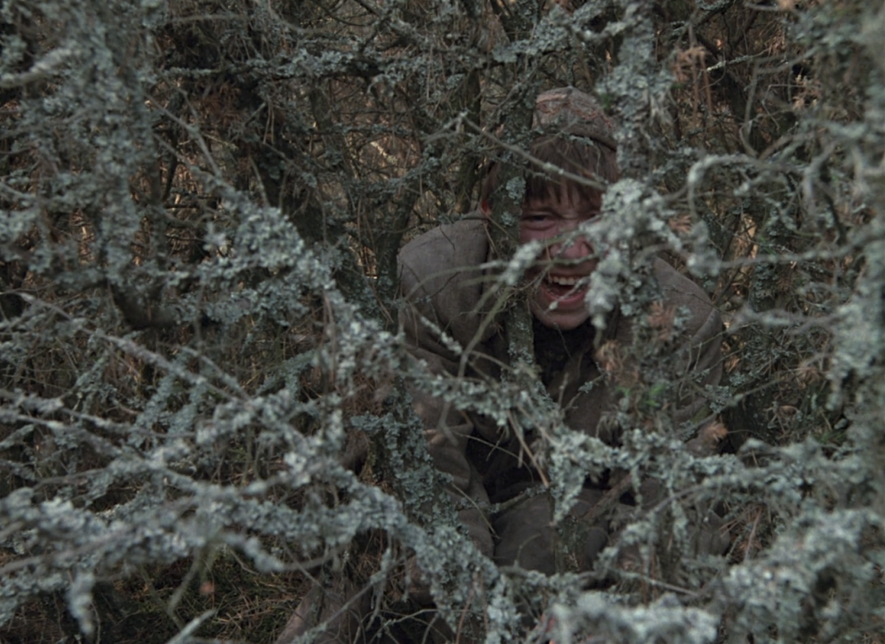
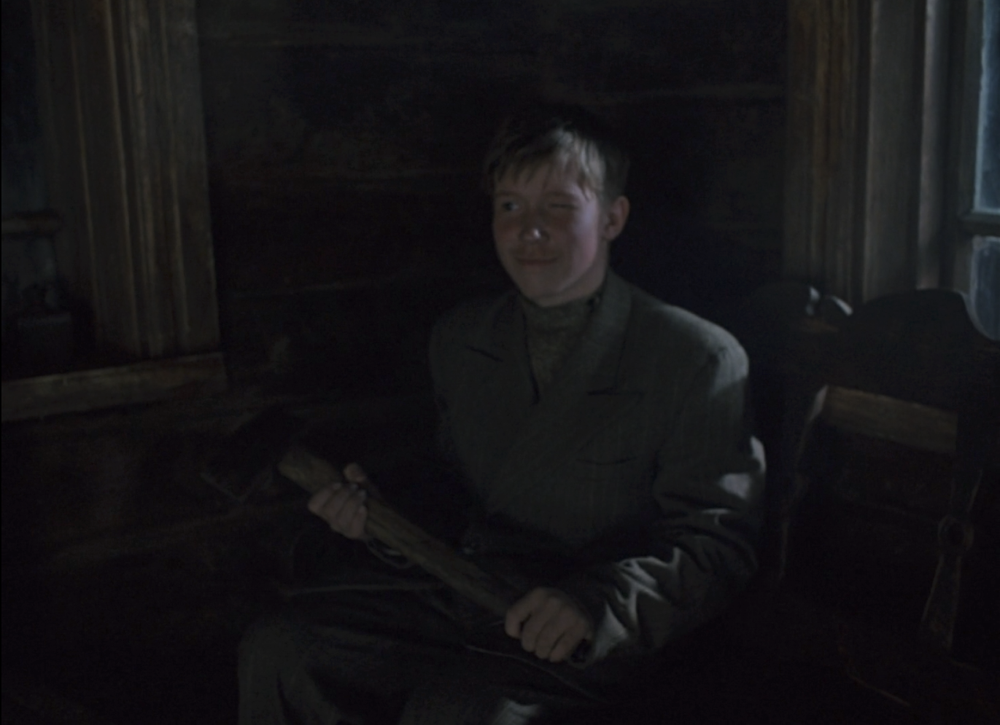

Paying in Youth
The holocaust by bullet cost the lives of 1.6 million civilians during the nazi occupation of Belarus during WWII (Zhukov, Yuri M). Come and See is an anti-war film released in 1985 directed by Elem Klimov. The film is based on the 1978 novel Khatyn and was co-written (along with Klimov) by the book's author, Ales Adamovich (Chapman). The experience of Adamovich during this period, specifically his time as a teenage partisan, as well as other real world accounts of the war contributed greatly towards the writing of the book and film.
Background information
Over the course of the occupation, nazis destroyed 5900 Belarusian settlements in order to make room for german colonization (Zhukov, Yuri M) as well as the capital being converted to the largest ghetto created by the nazis in the soviet union (Donald). In addition to the violence, the soldiers also sent back many of the survivors to work in labor camps in germany.
Come and See takes place in east Belarus during this occupation, following a young teenager named Flyora. Flyora joins a partisan group and leaves his village. Shortly after Flyora joins, the group sets off to leave the camp, leaving behind Flyora as well as a young nurse named Glasha. Unexpectedly, the nazis attack the camp and Flyora quickly becomes involved in a lengthy fight for survival. The film follows Flyora as he experiences the absolute violence of the nazi party. He returns to his village, only to find that the nazis have already slaughtered his family and most of the villagers. The village elder, badly burned but among the surviving civilians, curses Flyora and blames the event on him for digging up a rifle to join the partisan. Flyora goes with one of the villagers to steal a cow, but while crossing a field machine gun fire kills the villager and cow. Before he can make it back to the other villagers, he is caught up in a nazi raid of another village. Narrowly escaping death, Flyora rejoins the partisans and marches off, concluding the film.
Claim
In Come and See, Flyora is robbed of his innocence and forced to either become a free thinking adult, or fall victim to the exploitation of war and perpetuate the cycle of hatred.
Evidence
Flyora is innocent at the start of the movie, and sees war in the way an inexperienced child would. The opening scene shows our protagonist, Flyora, hiding in a bush as the village elder chastises him for digging up rifles. Before leaving, the elder warns him, telling Flyora he “better do as [the elder] says or [the elder] will see that [Flyora] pays” and that he will not be able to stay hidden from “them”. Flyora ignores the warning of the village elder due to his inexperience.
IMAGE CAPTION: (Flyora hiding in the bush after the elder has left)
After the elder leaves Flyora is laughing, vaguely camouflaged by the mossy twigs. His laughter indicates that he does not understand the horror that the elder was trying to convey. The inadequate and thoughtlessly chosen hiding place also shows that Flyora is not taking the threat of the nazi seriously. Rather, the idea is so difficult for him as an innocent teenager to understand, that he is making a game imitating hiding from a nazi soldier. His friend, with whom he is playing this game, imitates a soldier giving Flyora orders; Flyoras viewpoint on the chain of command is very limited and childlike. Rather than a facet of reality, war & the chain of command is more fantasy than reality to Flyora.
Flora's desire to fight certainly indicates an understanding of the responsibility to protect his country, but he is unaware of the atrocities that humankind is capable of. This becomes more clear when his mother tries to prevent him from joining the militia.
IMAGE CAPTION:(Flyora winks and smiles, gesturing slightly towards his two young sister in a comedic manner)
Trying to convince Flyora of the danger that lies ahead, his mother hands him an axe and tells him to go ahead and strike her down, along with his two sisters, if he is to leave and join the partisan. Flyora again does not take this seriously and instead gestures with the axe to get laughter out of his sisters. These opening scenes, prior to his departure to join the partisan, firmly establish Flyora as an innocent boy with no way to comprehend the fear the adults of the village are trying to communicate to him.
Other young characters in Come and See
Many of the other young characters serve to contrast Flyora’s development, showing various ways in which war affects the young.
Glasha, the young nurse working for the partisan, has already been made into an adult by the war by the time Flyora meets her at the camp. After the partisans' departure, Glasha tells Flyora of her desires.

IMAGE CAPTION:(Glasha amidst a monologue describing her despair)
Glasha desires things that are traditionally womanly, and in doing so provides a perspective of the war far different from Flyora. As she is describing these things to Flyora, the mise en scène creates a surreal atmosphere. Glasha is in the center frame, with a close-up of her face. The camera here takes the point of view of Flyora. The lighting wraps around the side of her head but leaves her face quite dim and in shadow. The extended length of this lighting and framing becomes unnerving & uncomfortable. Flyora’s reaction reflects this uncomfortable atmosphere. He does not understand Glasha’s desperation for a normal life. Glasha is mourning the loss of her innocence, while Flyora is just about to experience the same loss. This contrast is the final moment before nazi’s attack the camp.
Much later in the film, the partisan group captures a number of nazi soldiers and is holding them when captive before killing them. Among the group, there is an older high-ranking nazi official. The official begs for his life, pleading that he is just an old man who does not want to hurt anyone. The old man in the face of death throws away his ideals and attempts to appeal to the humanity of the partisans. Contrasting the old man is a very young nazi soldier.

CAPTION:(the young (left) and older (right) nazi soldiers who have been captured)
The soldier critices the old man for being weak and berated him for his lack of commitment to the nazi party and its ideals. The young soldier has clearly been far more indoctrinated into the nazi party. In a previous scene, the young soldier ordered the civilians of a village (who had been gathered into a barn) to leave their children behind to die alone in exchange for their lives. The young nazi is pitiful, as when juxtaposed to the older soldier it becomes clear that the nazi party has long since taken advantage of his useful spirit to brainwash him into one of their killing machines. This exploitation of innocence illustrates another way in which war takes from the young, this time from the side of the nazis.
During the aforementioned nazi raid on a village, one girl is left alive only to be gang-raped and brutalized by the nazis in the back of a truck. Notably, gang-rape occurs due to a shared identity of the perpetrators (Ullman). In this case, it was the shared identity created by the Nazi party, and the exploitation/brainwashing of the naïve german youth to be apart of this army.
Flyora’s decision
In the final moments of the film, Flyora is able to break free of the cycle and refuses to continue with blind hate. At the start of the pivotal scene, Flyora finds a picture of hitler floating in the river. In a fit of blind rage, he begins to shoot the picture repeatedly. As he does so, images of hitlers life being to play in reverse. Flyora imagines hitler as a child, just born, and a mother hoping for a bright future for her son. This image is enough to make Flyora stop shooting the image. Flyora realises he cannot truly hate another hitler, as even the monster responsible for his torment was once an innocent child, and had to be corrupted and born into hatred. He does not want to become a perpetrator of hate, and lowers his rifle. It is at that moment that Flyora decides to become a free thinking adult - unshackling himself from his trauma and stopping the violent cycle.
Conclusion
Throughout Come and See the horrors of war are laid bare. The most evil, vile acts imaginable take place. In addition, the cinematography of the film only intensifies that evil, creating an apocalyptic atmosphere. The decision Flyora makes serves as a plea to the audience by the film's writers: please do not forget empathy, and never let these atrocities happen again.